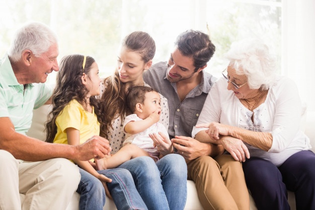

En cuarentena se tiende a pasar mucho más tiempo con la familia que antes, lo cual es algo bueno el compartir con los seres queridos, asímismo se pasa más tiempo con las mascotas. Con la familia se dialoga más, se realizan más actividades juntos por lo que hay un acercamiento entre las personas que conviven en la misma casa. De igual forma como se gana un acercamiento con la familia se pierde conexión con amigos, conocidos e incluso familiares que no viven en la misma casa, creando un distanciamiento que es necesario pero a la vez es frustante.
